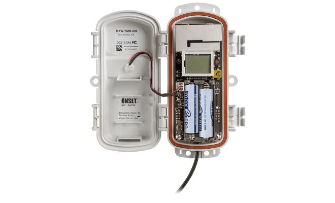

Monitoreo y Riego Automatizado
Nuestros sistemas integran **sensores avanzados** que miden la humedad del suelo, la temperatura y la luz, enviando datos en tiempo real a tu dispositivo. El riego se activa automáticamente solo cuando es necesario, optimizando el uso del agua y asegurando el bienestar de tus plantas.